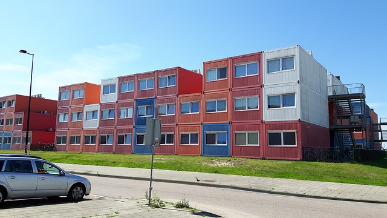
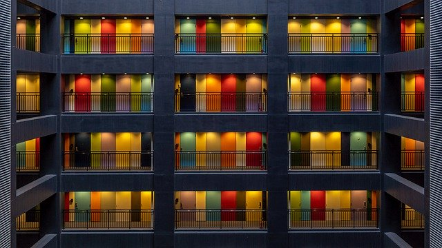

Favoritos

República Vila Nova
Ilha do governador, Rio de janeiro
Keep close to Nature's heart... and break clear away, once in awhile,
and climb a mountain or spend a week in the woods. Wash your spirit clean.
Ver mais
Desfavoritar

República Botafogo
Botafogo, Rio de janeiro
Keep close to Nature's heart... and break clear away, once in awhile,
and climb a mountain or spend a week in the woods. Wash your spirit clean.
Ver mais
Desfavoritar
República Atlantic
Copacabana, Rio de janeiro
Keep close to Nature's heart... and break clear away, once in awhile,
and climb a mountain or spend a week in the woods. Wash your spirit clean.
Ver mais
Desfavoritar